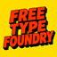

Free Type Foundry
Editor de tipografías — cada letra se edita en su propio recuadro
Nombre de la fuente
Nueva fuente
Subir TTF / OTF
Guardar proyecto
Abrir proyecto
Exportar TTF
Mover
Punto
Borrar
Dibujar
Línea
Contorno
Suavizar
Curva
Recta
Vaciar
Deshacer
Rehacer
Grosor
70
Celda
140px
Básico
Latín-1
Puntos
Todo
+ Glifo
Cada recuadro es una letra: edita sus puntos directamente dentro de él. La línea roja es la base; la azul punteada, el avance.